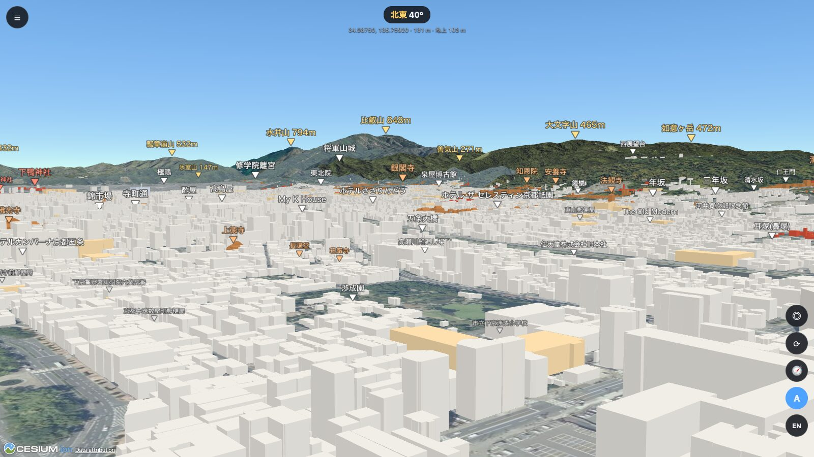
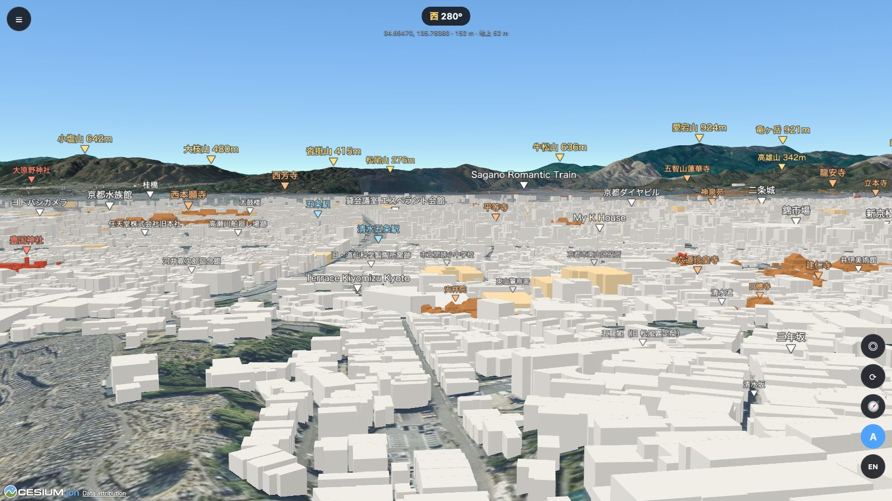
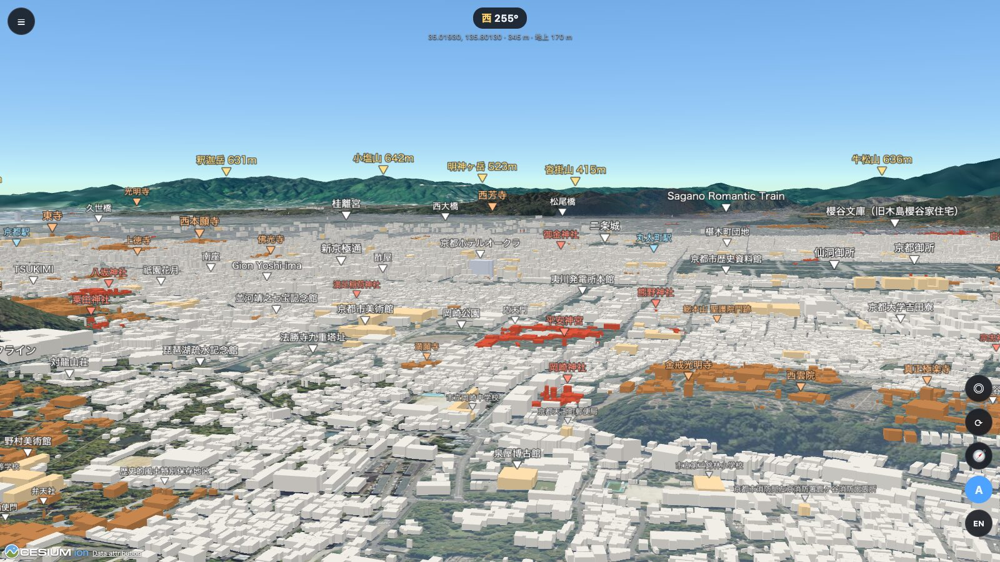
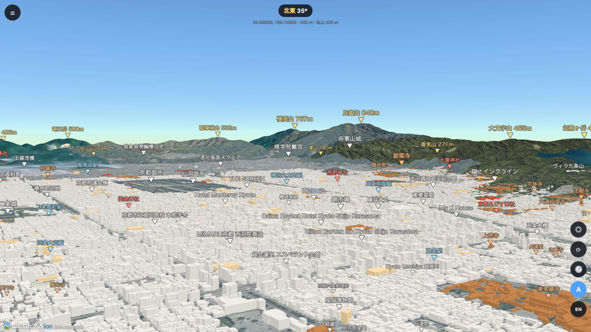
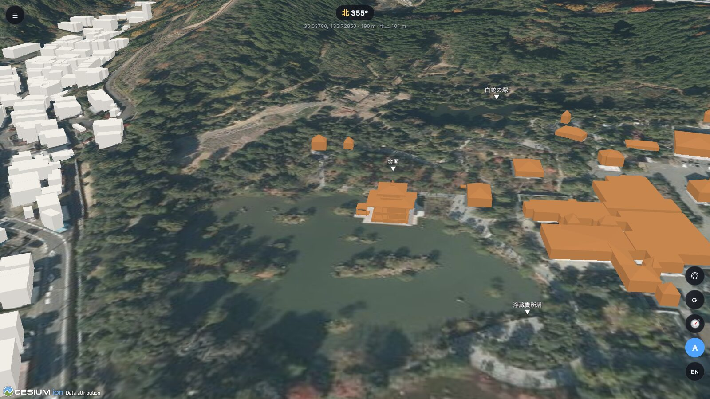
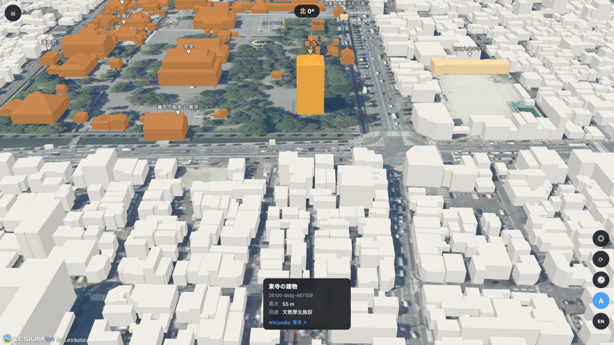

「あそこに見える大きな屋根、何というお寺だろう？」
地図アプリを開いても、答えは出てこない。
地図アプリは真上から見た地図です。でも知りたいのは、目の前の景色のどれが何か、ということ。
KYOTO VIEWER 3D は、立つ場所と目の高さを決めると、その位置から見える景色を3Dで描きます。見えている寺社・名所・山には名前のラベルが付き、▼ の先がその場所を指します。
京都の名所から、眺めてみる。
立つ場所の緯度・経度と高さを決めて、見回すだけ。行ったことのない場所からの景色も、その場で確かめられます。

京都タワーからの景色
京都駅前から北東を見渡すと、東山の寺社の向こうに比叡山 848m、大文字山 465m、如意ヶ岳 472m。どの山が何か、ひと目でわかります。

清水寺から、西山を望む
東山の中腹から、市街地の向こうに愛宕山 924m や小塩山 642m など西山の峰々。三年坂、建仁寺、西本願寺も名前で確かめられます。

「大」の字のあたりから
送り火の火床の高さから、京都の街を一望。平安神宮の朱色、金戒光明寺、京都御所、二条城、その先の西山まで。

三方を囲む山の名前
比叡山 848m、横高山 767m、大文字山 465m。盆地を囲む山々の名前と標高を表示し、地形に隠れる山はラベルが自動で消えます。
神社仏閣は、色でわかる。
Wikipedia に記事のある寺社約400か所は、境内の建物を色分けして表示します。
- PLATEAU の詳細モデル：東寺や東本願寺など、屋根の形まであるモデルを使用
- OpenStreetMap から推定：金閣寺・伏見稲荷大社・平等院など、PLATEAU にない建物も屋根付きで再現
- Wikipedia へのリンク：寺社のラベルや建物から、記事をすぐに開けます

しくみと機能
国土交通省の 3D 都市モデル「PLATEAU」、国土地理院のデータ、OpenStreetMap を使い、京都を実際の形で再現しています。
棟の建物
PLATEAU の京都市データの建物を、すべて立体で表示します。
の神社仏閣
境内の建物を寺院は茶色、神社は朱色で色分け。ラベルから Wikipedia の記事を開けます。
名前のラベル
山・寺社・名所・駅・施設に名前を表示します。▼ の先がその場所です。種類ごとに表示を切り替えられます。
目の高さを指定
「地面から」か「海抜」で、視点の高さを入力できます。展望台なら公表されている高さを入れます。
その場で一周
立った場所でぐるりと一回転。60・30・15 秒から速さを選べます。
日本語と英語
ラベルと画面の表示を、ワンクリックで切り替えられます。

気になる建物は、クリックで調べる。
- 名前・用途：PLATEAU に登録されている名前と用途
- 高さ：たとえば東寺の五重塔は 55m
- 寺社なら Wikipedia：どの寺社の境内の建物かと、その記事へのリンク
使い方は3ステップ
京都タワーの展望室からの景色を見る場合の例です。
場所を選ぶ
「地点をクリック」で京都タワーを選ぶか、緯度・経度を入力します。
高さを決める
基準を「地面から」にして、展望室の高さ 100m を入力します。
見回す
ドラッグで向きを変え、ホイールで拡大します。⟳ ボタンでその場で一周することもできます。